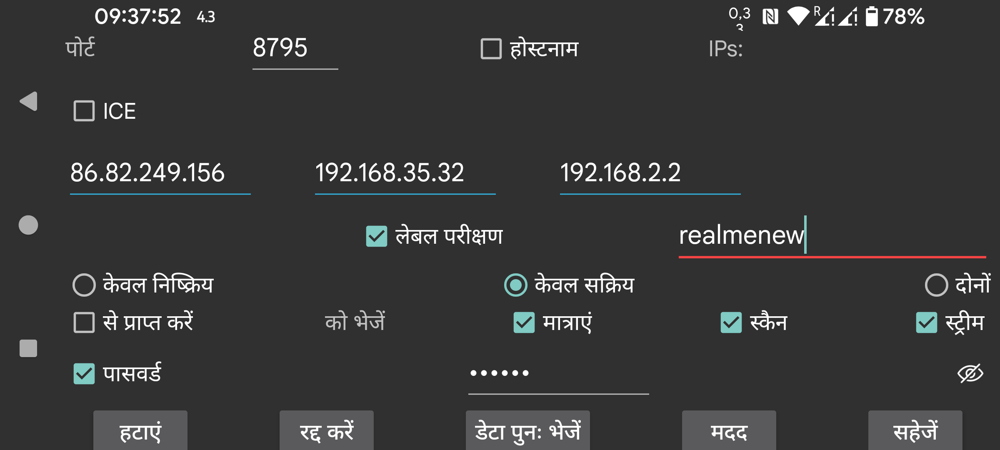

ar be de es fr hi it ja ko nl pl pt ru sv tr uk uz zh en
Juggluco के किसी अन्य इंस्टेंस के साथ एक कनेक्शन निर्दिष्ट करें। एक डिवाइस पर Juggluco IP/TCP के माध्यम से किसी अन्य डिवाइस पर Juggluco को डेटा भेजता है। एक कनेक्शन स्थापित करने के लिए, एक Juggluco को एक पोर्ट पर सुनना होता है और दूसरे को उस पोर्ट से संपर्क करना होता है। जिस पोर्ट पर Juggluco का यह इंस्टेंस सुन रहा है, वह पिछली स्क्रीन (बायां मध्य मेन्यू->मिरर) में दिया गया था। यहाँ आप वह पोर्ट निर्दिष्ट करते हैं जिससे Juggluco का यह इंस्टेंस तब संपर्क करता है जब यह सक्रिय रूप से संपर्क करता है। यदि Juggluco का यह इंस्टेंस किसी पोर्ट पर नहीं सुन सकता, तो "केवल सक्रिय" चुनें। यदि दूसरा पक्ष किसी पोर्ट पर नहीं सुन सकता, तो "केवल निष्क्रिय" चुनें, अन्यथा "दोनों" को चेक रहने दें। दूसरे पक्ष का Juggluco केवल निष्क्रिय निर्दिष्ट करे यदि आप यहाँ केवल सक्रिय चुनते हैं, और केवल सक्रिय यदि आप यहाँ केवल निष्क्रिय चुनते हैं, और दोनों यदि आप यहाँ दोनों चुनते हैं।
यदि Juggluco का यह इंस्टेंस सक्रिय रूप से संपर्क करता है, तो आपको वह IP(s) निर्दिष्ट करना चाहिए जिससे इसे संपर्क करना चाहिए। यदि उस होस्ट के कई IP हैं, तो आप एक से अधिक निर्दिष्ट करते हैं; उदाहरण के लिए जब दो डिवाइस कभी होम नेटवर्क के माध्यम से और कभी सीधे पोर्टेबल हॉटस्पॉट के रूप में जुड़े होते हैं।
चेतावनी: कभी भी कई डिवाइस के IP निर्दिष्ट न करें, ऐसी स्थिति में उनमें से प्रत्येक को डेटा का केवल एक हिस्सा प्राप्त होगा।
होस्टनाम: IP के बजाय एक होस्टनाम निर्दिष्ट करें। यह कनेक्शन को एक नेमसर्वर पर निर्भर बनाएगा इसलिए धीमा होगा और नेमसर्वर कनेक्शन की बाधा के प्रभाव में होगा। इसे केवल तभी चालू किया जाना चाहिए जब आप एक स्थिर IP कॉन्फ़िगर नहीं कर सकते और होस्टनाम डायनामिक IP को स्वचालित रूप से असाइन किया जाता है।
'केवल सक्रिय' को छोड़कर सभी मामलों में, आप 'पहचानें' चुन सकते हैं; इस मामले में Juggluco दूसरे पक्ष के IP के रूप में Juggluco से संपर्क करने वाले पहले IP को सहेजता है। यह सत्यापित करना कि सही डिवाइस संपर्क कर रहा है दो तरीकों से हो सकता है: IP का परीक्षण करने के लिए 'IP परीक्षण' चुनें। यदि आप लेबल परीक्षण चुनते हैं, तो एक संपर्क केवल तभी स्थापित होता है जब दोनों पक्षों ने समान लेबल निर्दिष्ट किया हो।
यदि आप चाहते हैं कि यह ऐप मिरर ऐप के रूप में काम करे तो से प्राप्त करें चुनें।
यदि आप चाहते हैं कि यह डिवाइस डेटा का प्रेषक हो, तो आपको यह निर्दिष्ट करना होगा कि कौन सा डेटा भेजना है।
मात्राएं: आपके द्वारा निर्दिष्ट खुराक, भोजन और खेल डेटा।
स्कैन: सेंसर स्कैन करके प्राप्त डेटा (Libre2 के तहत स्कैन और इतिहास, Libre3 के तहत केवल ब्लूटूथ के माध्यम से सेंसर तक पहुंचने के लिए आवश्यक डेटा)।
स्ट्रीम: ब्लूटूथ द्वारा प्राप्त डेटा। Libre3 के तहत इसमें इतिहास डेटा शामिल है।
कभी-कभी कुछ डेटा पहले से ही प्राप्त करने वाले डिवाइस पर मौजूद होता है। आप निर्दिष्ट कर सकते हैं कि यह डेटा किस समय तक मौजूद है:
शुरू: कोई डेटा मौजूद नहीं
अभी: सभी डेटा मौजूद
या स्क्रीन की आरंभ स्थिति से निर्धारित एक विशिष्ट तारीख।
जब एक डेटा स्रोत किसी मौजूदा कनेक्शन में जोड़ा जाता है, तो शुरू तारीख केवल जोड़े गए डेटा स्रोत को निर्धारित करती है। उदाहरण के लिए यदि स्कैन और स्ट्रीम पहले से होस्ट को भेजे गए थे, और अब मात्राएं जोड़ी जाती हैं, तो शुरू तारीख केवल भेजी जाने वाली मात्राओं को निर्धारित करती है।
यदि दो डिवाइस एक असुरक्षित कनेक्शन के माध्यम से जुड़े हैं, तो कनेक्शन के दोनों ओर समान (अधिकतम) 16-अक्षर का पासवर्ड निर्दिष्ट करके डेटा पर हस्ताक्षर और एन्क्रिप्ट किया जा सकता है। आपने जो निर्दिष्ट किया है उसे सहेजने के लिए सहेजें चुनें। हटाएं इस कनेक्शन विनिर्देश को हटा देगा।
QR: QR कोड स्कैन करके कनेक्शन का दूसरा पक्ष बनाएं।
सबसे सरल स्थिति में सभी कनेक्शन आपके होम नेटवर्क से संबंधित होते हैं, इसलिए आप स्थानीय IP का उपयोग कर सकते हैं। आप Wi-Fi के माध्यम से इंटरनेट पर भी कनेक्ट कर सकते हैं, उस स्थिति में आपको अपने मॉडेम मैनुअल से परामर्श करना चाहिए कि अपने होम नेटवर्क के IP और पोर्ट पर बाहरी पोर्ट को कैसे फॉरवर्ड करें।
इंटरनेट पर मोबाइल डेटा कनेक्शन के माध्यम से जुड़े दो स्मार्टफ़ोन सीधे एक दूसरे से जुड़ सकते हैं, यदि उनमें से एक एक नेटवर्क पोर्ट पर सुन सकता है। यदि दोनों नहीं कर सकते (उदाहरण के लिए यदि किसी के पास व्यक्तिगत IP नहीं है), तो वे अभी भी तीसरे डिवाइस के माध्यम से एक दूसरे से संवाद कर सकते हैं। एक संभावना यह है कि घर पर एक Android डिवाइस (न्यूनतम Android 4.4) पर Juggluco चलाया जाए जो मॉडेम के माध्यम से इंटरनेट से जुड़ा हो। एक अन्य संभावना यह है कि किसी कंप्यूटर (जैसे आपका PC या Amazon AWS) पर Juggluco से संबंधित एक कमांड लाइन प्रोग्राम चलाया जाए: https://www.juggluco.nl/Juggluco/cmdline/index.html
पोर्ट फॉरवर्डिंग ट्यूटोरियल:
https://portforward.com/how-to-port-forward/
https://stevessmarthomeguide.com/understanding-port-forwarding/
NFC के बिना डिवाइस पर ब्लूटूथ के माध्यम से ग्लूकोज मान प्राप्त करना संभव है (देखें https://www.juggluco.nl/Juggluco/mirror): NFC डिवाइस पर NFC के माध्यम से सेंसर को आरंभ करें और फिर गैर-NFC डिवाइस को स्कैन और स्ट्रीम डेटा भेजें। इसके बाद स्ट्रीम डेटा के लिए कनेक्शन को उलट दें और NFC डिवाइस में ब्लूटूथ कनेक्शन बंद करें और गैर-NFC डिवाइस में चालू करें और NFC डिवाइस में "ब्लूटूथ के माध्यम से सेंसर" भी बंद करें और गैर-NFC डिवाइस में चालू करें। तो आप एक डिवाइस से स्कैन कर सकते हैं और दूसरे डिवाइस पर ब्लूटूथ के माध्यम से ग्लूकोज मान प्राप्त कर सकते हैं। पर सभी डिवाइसों पर सभी सेंसर डेटा उपलब्ध होना चाहिए। यदि डिवाइस डेटा का आदान-प्रदान करते हैं, तो उन्हें हमेशा स्कैन और स्ट्रीम दोनों डेटा प्राप्त करना चाहिए। इसलिए आपको हमेशा स्ट्रीम डेटा को NFC डिवाइस पर वापस भेजना चाहिए और स्कैन डेटा को गैर-NFC डिवाइस पर वापस भेजना चाहिए। अन्यथा, डेटा सिंक से बाहर हो जाएगा जिससे पुराना प्रमाणीकरण डेटा उपयोग होगा या नया डेटा पुराने डेटा से ओवरराइट हो जाएगा।
मात्राएं डेटा पूरी तरह से स्वतंत्र है।
एक कनेक्शन बनाने का एक पूरी तरह से अलग तरीका ICE (Interactive Connectivity Establishment) है। यह बिना किसी पोर्ट फॉरवर्डिंग के Juggluco के दो उदाहरणों के बीच कनेक्शन बनाना संभव बनाता है। अधिकांश मामलों में दो फोन बीच में किसी सर्वर के बिना सीधा कनेक्शन प्राप्त कर लेते हैं। कुछ उदाहरणों में यह संभव नहीं होता और एक TURN सर्वर की आवश्यकता होती है। एक TURN सर्वर बायां मध्य मेन्यू→मिरर→TURN सर्वर में निर्दिष्ट किया जा सकता है। अन्य मामलों में सर्वर केवल दो फोनों को एक साथ लाने के लिए आवश्यक होते हैं। इसके लिए, आपको एक "ICE लेबल" निर्दिष्ट करना होगा जो केवल कनेक्शन के दोनों पक्षों द्वारा साझा किया जाता है, लेकिन Juggluco के किसी अन्य उपयोगकर्ता द्वारा उपयोग नहीं किया जाता। कनेक्शन के एक पक्ष को 0 और दूसरे को 1 निर्दिष्ट करना चाहिए। साथ ही, कनेक्शन के दोनों पक्षों द्वारा एक लेबल साझा किया जाना चाहिए, पर यह केवल इन फोनों पर अद्वितीय होना चाहिए। यहाँ सब कुछ निर्दिष्ट करने के बजाय, आप एक कनेक्शन स्वचालित रूप से उत्पन्न करने के लिए बायां मध्य मेन्यू→मिरर→AutoQR का उपयोग कर सकते हैं और कनेक्शन के दूसरे पक्ष के फोन से QR कोड स्कैन कर सकते हैं।
कनेक्शन के दोनों पक्षों पर एक सख्त पूरक विनिर्देश आवश्यक है। एक साधारण चूक डेटा संचरण को असंभव बना सकती है।
यह संभव है कि कनेक्शन रुक जाए और WIFI चालू या बंद करके या सिंक दबाकर इसे रीसेट करना पड़े। साथ ही, एक केवल सक्रिय-केवल निष्क्रिय कनेक्शन को दोनों पर या उल्टा बदलना अंतर ला सकता है।
आपको कनेक्शन के परिवर्तन के साथ IPs के परिवर्तन पर भी विचार करना चाहिए। उदाहरण के लिए होम नेटवर्क पर पोर्टेबल हॉटस्पॉट की तुलना में अलग IPs का उपयोग करना होगा।